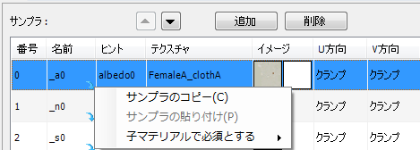

サンプラ単位のコピー & ペースト
マテリアルプロパティウィンドウのサンプラページにリスト表示されているサンプラを選択して右クリックメニューを開くと、サンプラ単位でのコピー & ペーストが行えます。

- リストを選択した状態でペーストを行うと、コピーしたデータが選択したリスト番号に挿入されます。
- リストを選択していない状態でペーストを行うと、リストの末尾にデータが追加されます。
- 複数のマテリアルパネルを選択した状態で、サンプラのコピー & ペーストを行うと、選択しているマテリアル全てにサンプラがコピーされます。
注意：
ペーストするマテリアルに、同じ名前のサンプラがあった場合はデータを上書きします。
関連リンク